De investigación Propuesto por Juan Bosco Romero Márquez, profesor colaborador de la Universidad de Valladolid Problema 330 Sean T y T´ dos triángulos que tienen el mismo perímetro y que verifican que, R/R´= r/r´, donde R, R´y r, r´ son los radios de los círculos circunscritos e inscritos, respectivamente a T y T. Demostrar que T y T´ son congruentes. Romero, J.B. (2006) Comunicación personal. Solución de José María Pedret, Ingeniero Naval. Esplugues de Llobregat (Barcelona). (25 de julio de 2006) |
|
DISCUSIÓN |
|
Si dos triángulos son congruentes sus lados son iguales.
Sean a, b, c los lados del primer triángulo. El polinomio cuyas raíces son los lados del triángulo es
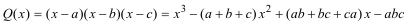 Con el semiperímetro
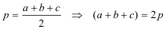 Con el área del triángulo
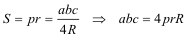 Con el radio del círculo inscrito
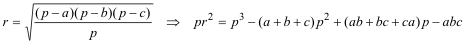
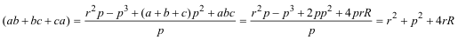 Sustituyendo en el polinomio
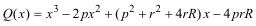 Para el segundo triángulo su polinomio es
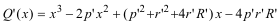 Pero el enunciado nos dice
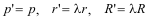 de donde
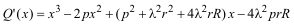 y comparando con Q(x)
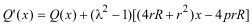 Estos polinomios sólo tienen las mismas raíces (los triángulos son congruentes) si
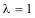 el valor -1 no puede ser ya que λ es una razón de lados. Además también se igualarían si
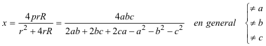 fuera raíz de Q(x) lo que en general no es cierto. |
|
CONCLUSIÓN |
|
En el enunciado falta indicar que
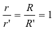 para ser correcto. |